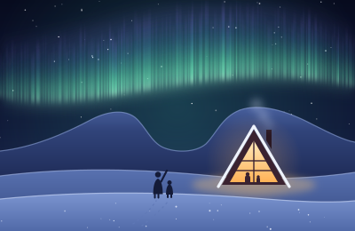
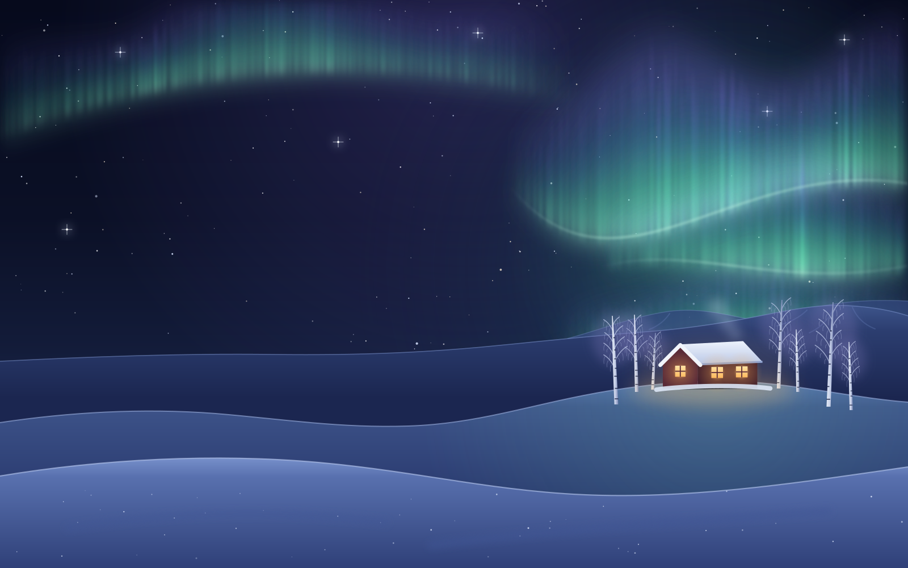
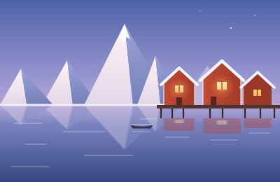
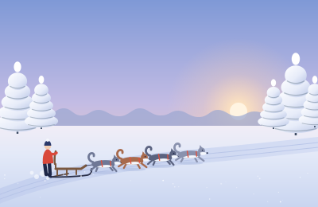
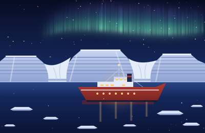

Family favouriteAbisko · For families
Aurora Family Week
Husky rides in the afternoon, an aurora hut with hot chocolate at night, and a guide who wakes you if the sky lights up.
Per adult. Children €1,150.

Small-group winter trips Lapland, Lofoten, Svalbard
Our trip planners are out under the lights right now. See this winter’s trips, or write to plan@tundraandtide.example and we’ll answer by morning.
Ask in your own words. Our trip planner answers right here, in seconds.
Four small-group trips, from December to April. Flights, a local guide and warm clothing are always included.

Family favouriteAbisko · For families
Husky rides in the afternoon, an aurora hut with hot chocolate at night, and a guide who wakes you if the sky lights up.
Per adult. Children €1,150.

Lofoten · Slow travel
Red fishermen’s cabins on stilts over the water, peaks straight out of the sea, and long pink afternoons.
Per person, flights included.

Finland · Active
Drive your own team through snow-heavy forest, and sleep in wilderness cabins with a wood-fired sauna.
Per person, flights included.

Svalbard · Expedition
Blue light at noon, a boat trip into the ice fjord, and a sky dark enough for the aurora at lunchtime.
Per person, flights included.
Never more than eight travellers with one guide. There’s a seat by the fire for everyone, and never a coach.
Our guides live where you’re going. They know which valley stays clear when the coast clouds over.
Flights from London, Amsterdam or Berlin, and warm boots, overalls and mittens waiting for you at the lodge.
The guide knocked at half past eleven. Ten minutes later, all four of us were lying in the snow in borrowed overalls, watching the sky move. The kids still talk about it.
How it works · Stand Inline
Some sites exist to start conversations: a trip, a project, an event nobody has planned yet. There, the question can be the page. The greeting is the headline, the box under it is the only call to action, and the first message lifts the conversation into a focused view where the answer gets the whole screen.
site="demo", Stand Chat's shared demo site. Its demo Stand-in reads the page's private prompt, but it may still decline to speak for a made-up travel company. With your own Site ID, your own Stand-ins answer, trained on your website.<script type="module" src="stand-inline.js"></script>
<stand-inline
id="ask-trip"
site="YOUR-SITE-ID"
look="stage"
grow="focus"
greeting="Where do you want to wake up this winter?"
placeholder="Somewhere we can see the northern lights with kids | A week of husky sledding, not too cold | Lofoten in March, on a budget"
suggestions="Northern lights with kids | A week of husky sledding | Lofoten in March"
prompt="The visitor is on the home page of Tundra & Tide. Aurora Family Week, Abisko: 6 nights in February and March, from €1,890 per adult… Recommend one trip, then ask about ages, dates and budget, one question at a time."
analytics-id="home-hero-concierge">
<h1 slot="headline">Where do you want to wake up this winter?</h1>
<div slot="offline">Our trip planners are out under the lights right now…</div>
</stand-inline>
<button type="button" onclick="document.getElementById('ask-trip').focus()">Plan my trip</button>look="stage" turns the greeting into the headline, with a big box and the suggestions under it. It's the loudest look: nobody scrolls past it without seeing the question.placeholder takes several examples separated by | and types them out in turn, in your visitors' words. It stops while someone is typing.grow="focus" lifts the conversation into a focused view over the page on the first message. Escape, the collapse button or a click on the blurred page puts it back in the hero. Add focus-at="3" to let the first exchanges stay in place and lift on the third message.<h1 slot="headline"> puts your own heading where the greeting would show, so the page keeps a real h1 for search engines and screen readers. The greeting still opens the conversation.<div slot="offline"> shows when nobody can answer. Without it the element hides itself, which in a hero would leave a hole.prompt holds every trip with its dates, prices and what's included, and how to advise: one trip first, then one question at a time.The element reads the page's colors, but it can't read them out of an illustration. On a dark hero, set the night colors yourself: they also color the focused view.
stand-inline {
--si-page: #0E1630;
--si-surface: #121B38;
--si-ink: #F4F6FB;
--si-accent: #7CF2C3;
--si-line: rgb(234 241 251 / .18);
--si-stage-size: clamp(2.4em, 6vw, 5em);
--si-stage-weight: 400;
font-size: 18px;
}
stand-inline::part(headline) { font-family: 'Young Serif', serif; }
stand-inline h1 { margin: 0; font: inherit; }
/* The focused view: an aurora glow on the sheet, a night-blue blur behind it. */
stand-inline::part(sheet) {
background:
radial-gradient(90% 60% at 50% 0%, rgb(92 225 182 / .16), transparent 70%),
#121B38;
}
stand-inline::part(dialog)::backdrop {
background: rgb(6 10 28 / .3);
backdrop-filter: blur(12px);
}The send button takes the aurora green and picks a dark arrow by itself, because the green is light.
field or line fits better.el.focus() puts the cursor in the box, as Plan my trip does here, and el.ask('…') sends a question for the visitor.npx degit standchat/examples/stand-inline my-stand-inline